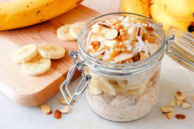

Overnight Oats Recipe

Ingredients
- Oatmeal
- Peanuts or Peanut Butter
- Chia Seeds
- Banana
- Milk
Instructions
- Peel Banana and get all things ready
- Put all ingredients into a bowl and mixing container
- Mix all ingredients in well and place into the fridge for a couple hours or overnight
- When ready to eat, mix a little more, add fresh fruit and enjoy!
For more information and overnight oats recipes go here!